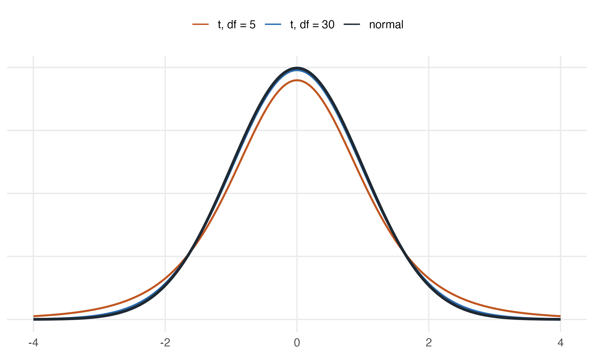

1.7 When \(\sigma\) is unknown: the \(t\)-test
Everything so far assumed we knew the population standard deviation \(\sigma\). We almost never do. Replacing it with the sample standard deviation \(s\) adds a second source of uncertainty, and the statistic
\[t_{calc} = \frac{\bar{x} - \mu_0}{s/\sqrt{n}}\]
no longer follows a normal distribution. It follows Student’s \(t\) with \(n - 1\) degrees of freedom — a distribution with fatter tails, which demands more evidence before it will let you reject.

Figure 1.4: Student’s \(t\) against the standard normal. With few degrees of freedom the tails are noticeably heavier, so critical values sit further out.
Settling the question with the actual class
We opened this chapter with a made-up sample of 36 students. We can now do the
real thing. stats-class.csv holds the survey this class filled in — names,
ages, heights, gender:
#> 'data.frame': 33 obs. of 4 variables:
#> $ student_id: chr "S01" "S02" "S03" "S04" ...
#> $ age : int 31 19 18 18 19 18 18 21 18 19 ...
#> $ height : int 178 161 181 164 170 175 176 186 161 170 ...
#> $ gender : chr "M" "F" "M" "F" ...Thirty-three rows, but look at the last one. One student left age and height blank, and another did not give a gender:
#> student_id age height gender
#> 8 S08 21 186 <NA>
#> 33 S33 NA NA FA blank is not always an NA. In a numeric column an empty field is read
as NA, but in a text column it is read as the empty string "" — and ""
is a perfectly ordinary value as far as is.na(), complete.cases() and
na.rm are concerned. A gap in a text column can therefore hide in plain
sight.
If a dataset you did not prepare yourself has blanks, say so explicitly when you read it:
The files in this book are already written so that plain read.csv() does the
right thing.
mean() returns NA if even one value is missing — it refuses to guess what
you meant. Pass na.rm = TRUE to drop the gaps, and always know how many you
dropped.
#> [1] NA#> [1] 169.5Now the test. We do not know the population standard deviation of student heights, so this is a \(t\)-test, not a \(Z\)-test:
heights_real <- students$height[!is.na(students$height)]
c(n = length(heights_real),
mean = mean(heights_real),
sd = sd(heights_real))#> n mean sd
#> 32.00 169.50 8.71#>
#> One Sample t-test
#>
#> data: heights_real
#> t = 2.9, df = 31, p-value = 0.006
#> alternative hypothesis: true mean is not equal to 165
#> 95 percent confidence interval:
#> 166.4 172.6
#> sample estimates:
#> mean of x
#> 169.5\(t = 2.92\) on 31 degrees of freedom, with a \(p\)-value of 0.0064. We reject the claim that the average is 165 cm. The 95% interval, \([166.4,\ 172.6]\), excludes 165 — the same verdict, as always.
Notice how much narrower this is than the textbook version of the problem. The opening example assumed we somehow knew \(\sigma = 8\). Here we had to estimate it from 32 people, and the \(t\) distribution charges us for that uncertainty with a wider interval and a higher bar to clear.
Also notice what the data is not: 32 students in one classroom are not a random sample of all APU students. The arithmetic is correct; whether it answers the question about the university is a separate matter, and a harder one.
Worked example
The dean estimates that full-time faculty teach 11.0 classroom hours per week. You sample eight faculty members. Can you reject the dean’s claim at \(\alpha = 0.10\)? At \(\alpha = 0.01\)?
hours <- c(11.8, 8.6, 10.5, 7.9, 6.4, 10.4, 10.0, 8.2)
c(n = length(hours), mean = mean(hours), sd = sd(hours))#> n mean sd
#> 8.000 9.225 1.749On paper. With \(\bar{x} = 9.225\), \(s = 1.749\), \(n = 8\) and \(df = 7\):
\[ t_{calc} = \frac{9.225 - 11}{1.749/\sqrt{8}} = \frac{-1.775}{0.618} = -2.87 \]
The critical values are \(t_{0.05,\,7} = 1.895\) and \(t_{0.005,\,7} = 3.499\).
- At \(\alpha = 0.10\): \(2.87 > 1.895\) → reject \(H_0\).
- At \(\alpha = 0.01\): \(2.87 < 3.499\) → fail to reject \(H_0\).
In R. Both the pieces and the packaged version:
t_calc <- (mean(hours) - 11) / (sd(hours) / sqrt(length(hours)))
t_crit <- qt(c(0.95, 0.995), df = 7) # 10% and 1%, two-tailed
c(t_calc = t_calc, crit_10pct = t_crit[1], crit_1pct = t_crit[2])#> t_calc crit_10pct crit_1pct
#> -2.870 1.895 3.499#>
#> One Sample t-test
#>
#> data: hours
#> t = -2.9, df = 7, p-value = 0.02
#> alternative hypothesis: true mean is not equal to 11
#> 90 percent confidence interval:
#> 8.053 10.397
#> sample estimates:
#> mean of x
#> 9.225The \(p\)-value is 0.024 — below 0.10 but above 0.01, exactly matching the two different verdicts we reached by hand.
The same data can be “significant” at one level and not at another. Nothing has changed about the world between those two lines — only how much risk of a false alarm we were willing to tolerate. This is why reporting the \(p\)-value itself is far more informative than reporting a bare “significant / not significant.”